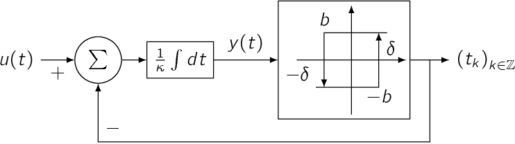
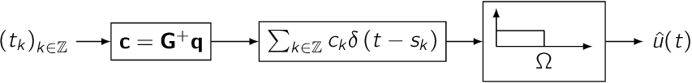
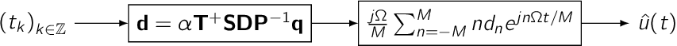
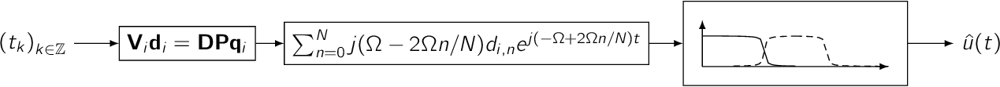
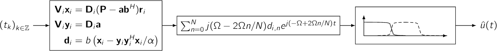
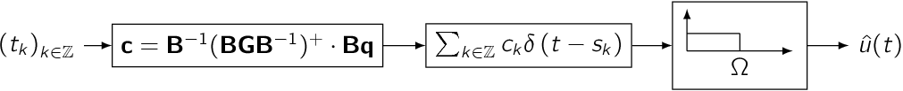
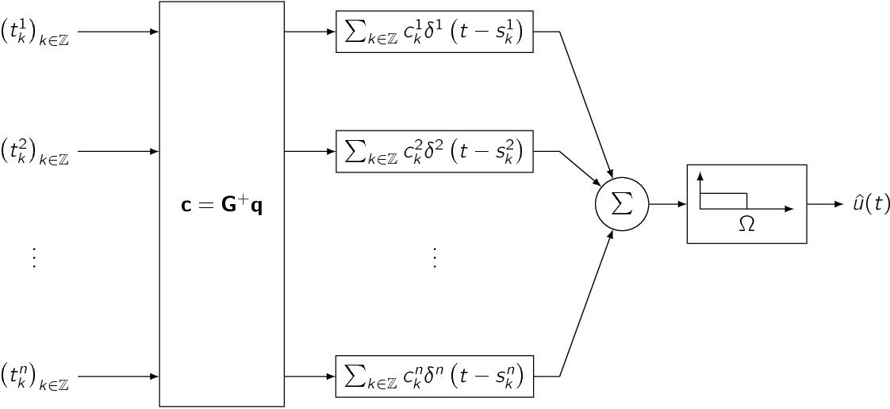
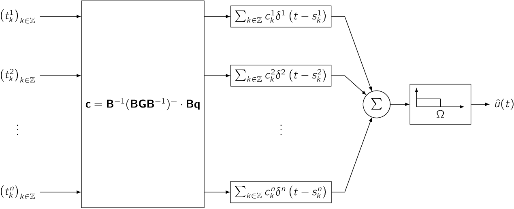

Encodes a bandlimited signal using an Asynchronous Sigma-Delta Modulator.
Reconstructs a bandlimited signal encoded with an Asynchronous Sigma-Delta Modulator using sinc kernels.
Reconstructs a bandlimited signal encoded with an Asynchronous Sigma-Delta Modulator using a fast approximation method.
Decodes a bandlimited, arbitrarily long signal encoded by an Asynchronous Sigma-Delta Modulator by stitching together blocks of data decoded by solving a Vandermonde system using the Björk-Pereyra Algorithm.
Decodes a bandlimited, arbitrarily long signal encoded by an Asynchronous Sigma-Delta Modulator by stitching together blocks of data decoded by solving a Vandermonde system using the Björk-Pereyra Algorithm. This reconstruction method does not require the specification of an integrator threshold.
Reconstructs a bandlimited signal encoded with an Asynchronous Sigma-Delta Modulator using sinc kernels. This reconstruction method does not require the specification of an integrator threshold.
Decodes a bandlimited signal encoded by multiple Asynchronous Sigma-Delta Modulators using sinc kernels.
Decodes a bandlimited signal encoded by multiple Asynchronous Sigma-Delta Modulators using sinc kernels. This reconstruction method does not require the specification of an integrator thresholds.
{kind=link}
{kind=link}
{kind=link}
{kind=link}
{kind=link}
{kind=link}
{kind=link}
{kind=link}